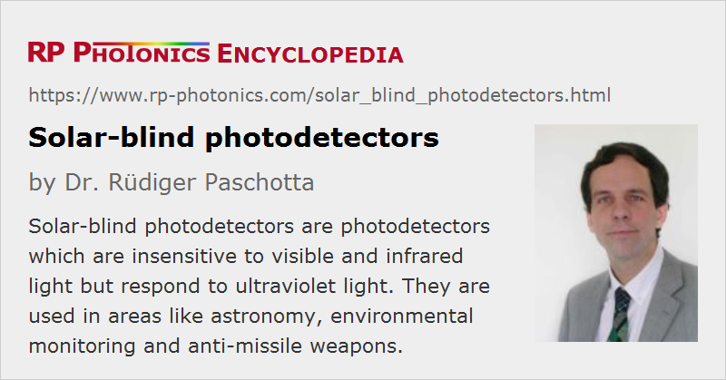

Solar-blind Photodetectors
Definition: photodetectors which are insensitive to visible light but react to ultraviolet light
More general term: photodetectors
Category: light detection and characterization
How to cite the article; suggest additional literature
Author: Dr. Rüdiger Paschotta
Solar-blind photodetectors are photodetectors which are insensitive to infrared, visible and near-UV light but respond to ultraviolet light with wavelengths below about 300 nm. Note that solar radiation on Earth also somewhat extends into the ultraviolet region; outside the atmosphere, there is a much higher UV content. Solar-blind detectors may thus still show some response when exposed to solar light in space.
Similarly, one defines visible-blind photodetectors, but here the long wavelength cut-off is closer to the visible range, for example around 360 nm.
Although many kinds of photodetectors (e.g. based on silicon photodiodes) could in principle be made solar-blind by equipping them with an optical filter which transmits ultraviolet light while blocking visible light, the term solar-blind detectors is mostly used for detectors which are naturally insensitive to visible light and thus do not require such a filter. The typical solution is to use the internal photoelectric effect in a semiconductor material with a wide band gap, where light with lower photon energy cannot be absorbed and thus does not generate a photocurrent. Similarly, one can use the external photoelectric effect with materials having a relatively large work function. With both approaches, the responsivity in the visible spectral region can be orders of magnitude lower than in the ultraviolet region. Note, however, that at high optical intensities (as are possible with ultrashort pulses) one may still obtain a substantial response from light with longer wavelengths via two-photon absorption.
The high photon energies of short-wavelength UV light lead to rapid degradation of many materials. Solar-blind detectors should be optimized such that they can tolerate UV irradiation with a substantial lifetime dose. In some applications, for example in space, they are also exposed to substantial amounts of short-wavelength radiation, which they should also resist: they should have a high radiation hardness.
Solar-blind detectors can usually be operated at relatively high temperatures without producing substantial dark currents. This behavior results from the relatively high band gap energy or work function, which inhibits thermal excitations. It can be convenient in applications where the undesirable deposition of some substances can be avoided by operation at relatively high temperature.
Some detectors (e.g. based on AlGaN, see below) are also suitable for making focal plane arrays for UV imaging devices, which can be used in solar-blind cameras.
Examples for Solar-blind Photodetectors
Photodiodes and Schottky Barrier Detectors
Nitrite-based III-V semiconductors typically have a relatively large band gap energy and a direct band gap, which leads to a well-defined long wavelength cut-off. In particular, one uses aluminum gallium nitride (AlxGa1−xN), a ternary material where the band gap energy can be tuned from 3.4 eV (GaN) to 6.2 eV (AlN) via the composition parameter x. Often, one adjusts the composition with a high enough x value such that the long-wavelength cut-off lies below 300 nm. One can realize conventional photodiodes and Schottky barrier detectors; the latter are somewhat simpler to fabricate.
Silicon carbide (SiC) photodiodes, which are sensitive to light with wavelengths below about 355 nm, can be used as visible-blind detectors.
Photocathode-based Detectors
An example for a solar-blind photocathode material is cesium tellurite (CsTe), having a long wavelength cut-off around 320 nm. Another example is cesium iodate (CsI) with a cut-off around 200 nm. Of course, one needs to use such photocathodes in conjunction with an optical window exhibiting a high transmissivity in the ultraviolet region.
Solar-blind photocathodes can be used in photomultipliers and in image converters, for example.
Applications of Solar-blind and Visible-blind Detectors
Solar-blind detectors are interesting for all applications where one needs to detect ultraviolet light while not being disturbed by (possibly much stronger) visible light. For example, one can use such detectors for monitoring UV irradiation on Earth, which can increase due to depletion of the ozone layer. Detectors for short-wavelength UV light can also be useful for flame detection and in solar XUV-VUV radiometers – although it is somewhat odd to call detectors solar-blind while using them for detecting solar radiation.
Solar-blind cameras can be used for monitoring electrical power lines, where electric discharges can easily be recognized through their UV emission. An example for a military application is the detection of high-temperature flames from the rocket motor of a missile observed in intense sun light.
Suppliers
The RP Photonics Buyer's Guide contains 4 suppliers for solar-blind photodetectors.
Questions and Comments from Users
Here you can submit questions and comments. As far as they get accepted by the author, they will appear above this paragraph together with the author’s answer. The author will decide on acceptance based on certain criteria. Essentially, the issue must be of sufficiently broad interest.
Please do not enter personal data here; we would otherwise delete it soon. (See also our privacy declaration.) If you wish to receive personal feedback or consultancy from the author, please contact him e.g. via e-mail.
By submitting the information, you give your consent to the potential publication of your inputs on our website according to our rules. (If you later retract your consent, we will delete those inputs.) As your inputs are first reviewed by the author, they may be published with some delay.
See also: photodetectors, ultraviolet light, photocathodes
and other articles in the category light detection and characterization
|  |
If you like this page, please share the link with your friends and colleagues, e.g. via social media:
These sharing buttons are implemented in a privacy-friendly way!